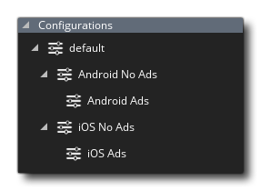

 由于跨平台开发的需求以及为不同客户端和设备提供和定制一种产品的需求，GameMaker Studio 2 包含使配置更简单的 “配置（Configurations）”。使用此系统，你可以在不同的启动屏幕、图标和内含文件之间快速切换，并且可以随时测试或导出与目标平台或客户端相关的文件，所有这些都来自相同的基本代码。
重要！ 产品的试用许可证 不 提供配置。
要设置配置，建议你首先通过将项目的 所有 可配置资产合并到 GameMaker Studio 2 中来准备 “默认” 配置，包括图标和启动画面（通过 游戏选项 完成）、内含文件 和你可能需要 扩展，还可以更改声音资源或纹理组设置的输出属性以及许多其他选项... 几乎可以在 IDE 中配置的任何内容都将存储在当前选定的配置中。
注意： 使用内含文件和扩展，你可以选择要导出到的目标平台。这也应该设置，以便当你创建单独的配置时，只需要取消那些你不需要的配置。
设置默认配置后，可以通过右键单击  配置文件夹并选择 添加，将新的配置添加到资源树。完成后，你可以从资源树顶部选择新配置，一旦选定，你可以继续进行自定义，以便随配置一起更改。为此，你现在应该查看每个目标平台的游戏选项，添加、删除或更改图标，启动画面以及与配置相关的任何其他信息，以及为每个配置设置纹理组。如果你为每个配置设置了纹理组，则还需要遍历所有图形资源（精灵和背景）并重新分配它们。你对这些设置所做的每项更改都将由配置管理器记住，并在你更改配置时调用。
配置文件夹并选择 添加，将新的配置添加到资源树。完成后，你可以从资源树顶部选择新配置，一旦选定，你可以继续进行自定义，以便随配置一起更改。为此，你现在应该查看每个目标平台的游戏选项，添加、删除或更改图标，启动画面以及与配置相关的任何其他信息，以及为每个配置设置纹理组。如果你为每个配置设置了纹理组，则还需要遍历所有图形资源（精灵和背景）并重新分配它们。你对这些设置所做的每项更改都将由配置管理器记住，并在你更改配置时调用。
值得注意的是，你可以让 GameMaker Studio 2 自动将任何给定的配置应用于任何给定的目标平台。这可以通过从 目标窗口 中选择该平台所需的配置来完成。一旦以这种方式设置了使用的配置，每次编译到该目标时，无论是测试还是创建最终资产包，都将使用配置。有关目标窗口的更多信息，请参阅 编译 一节。